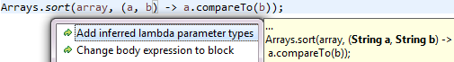
- from method reference to lambda expression:
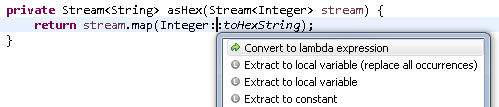
- from lambda expression to method reference:

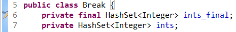
This cannot be implemented for final variables with compile-time constant values because Java compiles the constant value into class files and leaves no trace of a field access at points where the final field is read.Previously, example method "test1" would raise a potential null pointer warning at point (3). To correct this issue the merging of information leading towards point (3) has been improved to correctly see that the null value from point (1) can never reach point (3).
In example method "test2" JDT previously reported a redundant null check at (3), because analysis didn't see that the assignment directly above could indeed assign a non-null value.
In example method "test3" it was reported that "o can only be null" at (3), because the information from the two null-assignments wrongly overruled the one assignment from non-null. With improved analysis this is now softened to saying "o may be null".
The graph on the right hand side illustrates the new composition of flow information: for each relevant point (3) inside a loop, the analysis first merges the flows that lead into (1). This result is concatenated with the partial flow (b.c), which leads from the loop start to point (3). Improved precision has thus been achieved within the design limits of a single AST traversal in order to minimize impact on compiler performance.
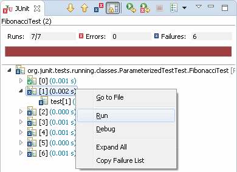
See the full story in Moritz' Blog.
Ignore by default.
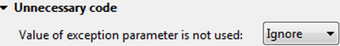
(In earlier Mars milestones, detection for unused exception parameters was added as part of the old "Value of parameter is not used" option. But since it turned out that there are situations were not using an exception parameter actually makes sense, we've reverted the old option to only apply to method parameters.)org.eclipse.jdt.core.javaFormatter) to allow third-party source code formatters as extensions.
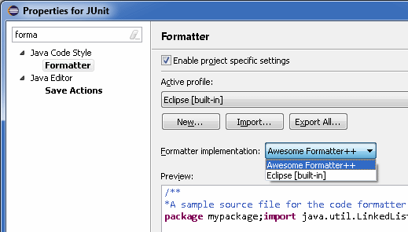
The default code formatter is used if no third-party formatter is provided.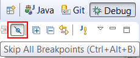
Previously, annotation-based null analysis was significantly limited by the fact that many 3rd party libraries have no null annotations in their API. This implied that any errors caused at this interface could not be detected by the analysis, and even worse, implementors of library-defined interfaces could not use any intended contracts, because any null annotations in overriding methods were flagged as incompatible with the super version.
JDT now supports the concept of "external annotations". A user can specify null annotations in separate files and attach these to a given library. The compiler will take external null annotations into consideration for its null analysis.
Configuration:
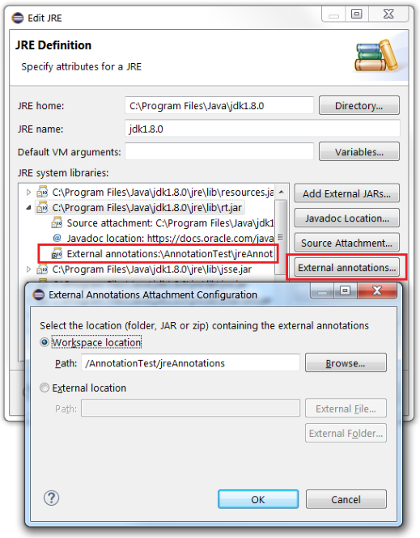
External annotations can be provided as a directory tree of individual text files or as a zip file. External annotations can be attached to a JRE (per workspace) and to arbitrary libraries (per project).
- See below for creating external annotations using the new command Annotate
- See the wiki for the full story.
Two pre-requisites must be met for using this command:
- The project is configured to use annotation-based null analysis.
- An existing workspace folder has been specified as the external annotation location for a given library.
Users may select any type in the signature of a library method or field, and invoke Annotate -
either using the context menu, or by pressing Ctrl+1.
Proposals will be offered for marking the selected type as @NonNull or @Nullable.
All method parameters, return types and field types can be annotated.
Additionally when Java 8 is used, details like type arguments and type bounds etc. can be annotated.
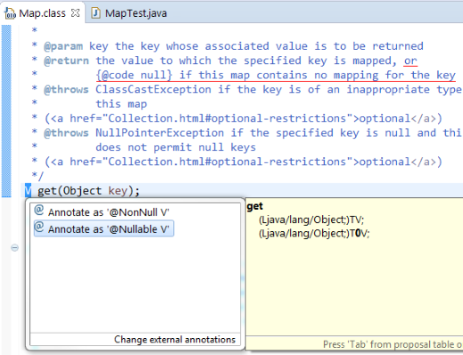
After selecting a proposal, the compiler will immediately leverage the new annotation for its null analysis.
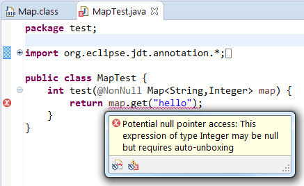
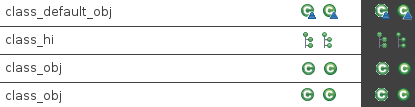
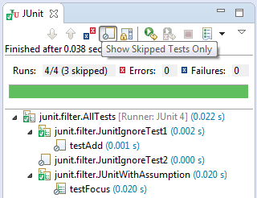
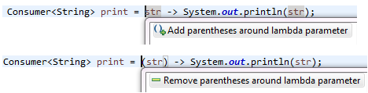
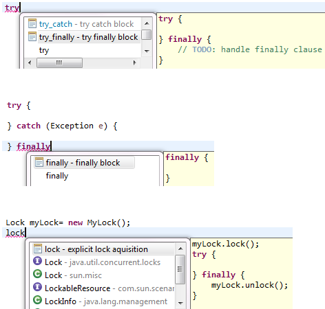
- Leverage knowledge that auto-boxing always produces a non-null value.
- Leverage knowledge that certain compiler-generated methods - like
valueOf()andvalues()on enum types - provide non-null values. - Various improvements in resource leak analysis.
TYPE_USE target).
In particular, working with external annotations benefits from this feature, as the Javadoc hover now shows these external annotations as well, thus providing the attached information right where it is needed. Also the Javadoc view is able to show the same information.
Javadoc hover after having applied the Annotate command for the return type of Map.get():
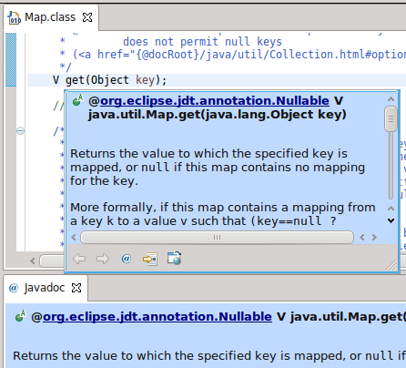
As of Eclipse 4.5, this feature is only enabled in projects that are configured for annotation-based null analysis.